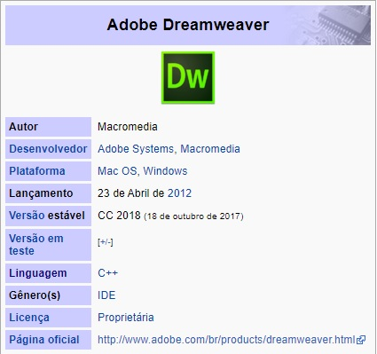

HTML (acronimo para expressão inglesa Hypertext Markup language, que significa linguagem de Marcação Hipertexto) é
uma lingaugem de marcação utilizada para produzir paginas Web. Documentos htmls podem ser interpretados por
computadores.
Este curso ensina desde os conceitos basicos da linguangens HTML, até a criação de formularios para Web, ideal para
iniciantes, ou para quem quer uma guia de consulta, também possui Glossário com todas as palavras mais ultilizadas na
internet.
O que é?

O Adobe Dreamweaver, antigo Macromedia Dreamweaver é um software de desenvolvimento voltado para
a web criada pela Macromedia (adquirida pela Adobe Systems), e que está atualmente na versão CC.
Suas versões iniciais serviam como um simples editor HTML WYSIWYG ("What You See Is What You Get",
ou "O que você vê é o que você tem"), porém as suas versões posteriores incorporaram um notável suporte
para várias tecnologias web, tais como XHTML, CSS, JavaScript, Ajax, PHP, ASP, ASP.NET, JSP, ColdFusion
e outras linguagens Server-side.
No inicio Dreamweaver era apenas um editor simples podendo ser usado em modo código ou modo design,
WYSIWYG. Na época seu grande concorrente era o Microsoft FrontPage, logo no lançamento do
Dreamweaver 4.0 que apresentou nesta versão sua integração com o Ultra-dev, uma poderosa ferramenta de
desenvolvimento para os programadores web com suporte a PHP, ASP, ColdFusion e JSP inicialmente.
Logo na versão Dreamweaver MX, o Ultra-dev passou a ser totalmente integrado ao Dreamweaver através
do Painel Aplication, assim incluindo no mesmo definitivamente o conceito de ferramenta de desenvolvimento
web.
Utilizando-se da base da mesma versão do Dreamweaver, MX, a Macromedia na época incorporou a
estrutura do Dreamweaver a primeira versão da ferramenta Adobe Flex, assim também adotando ao
Dreamweaver o conceito de ser IDE, podendo integrar outras ferramentas dentro de si próprio.
A partir desse conceito começaram a surgir várias extensões do tipo suíte, pacote completo de desenvolvimento para determinado assunto ou linguagem, de desenvolvimento para
o Dreamweaver, adotando no mesmo funcionalidades avançadas para cada uma das linguagens suportadas por ele. Destacando-se nesta época a InterAKT que vinha lançando
inovadoras suítes como por exemplo: Spry e Desevelopers ToolBox, hoje comprada pela Adobe Systems.
Em seu modo Design, como um editor WYSIWYG, o Dreamweaver pode esconder os detalhes do código HTML do usuário, tornando possível que não-especialistas criem
facilmente páginas, sites e até mesmo aplicações para web. Alguns desenvolvedores criticam este modo de função do Dreamweaver por produzir códigos sujos, muito maiores do
que o necessário, o que pode levar a erros de visualização em páginas HTML e erros de segurança em aplicações web. No entanto, este tipo de erro não se dá a ferramenta, e sim
ao profissional que está usando a ferramenta, pois assim como outras IDE's de desenvolvimento, o Dreamweaver também dá a possibilidade de editar seus trabalhos em modo
código, suportando as sintaxes de todas as linguagens de programação cobertas pelo software e também possuindo dicas, referências em modo código batata e até mesmo
extensões para debugar códigos.
Uma outra boa funcionalidade do Dreamweaver é permitir selecionar a maioria dos navegadores para se ter uma previsão (preview) da visualização do HTML Output da página
diretamente no(s) navegador(es) de destino. O software possui também ótimas ferramentas de gerenciamento e transferência de projetos tais como a habilidade de encontrar e
substituir, no projeto inteiro, linhas de texto ou código através de parâmetros especificados. O painel de comportamentos também permite a criação de JavaScript básico, sem
qualquer conhecimento de codificação.
Um aspecto altamente alardeado do Dreamweaver é sua arquitetura expansível. As “extensões”, como são conhecidas, são pequenos programas que qualquer desenvolvedor web
pode escrever (geralmente em HTML e JavaScript) e qualquer um pode baixar e instalar, o que proporciona funcionalidade adicional ao software. O Dreamweaver conta com uma
ampla comunidade de desenvolvedores que torna disponíveis extensões, comerciais ou grátis, para a maioria das tarefas de desenvolvimento web, de simples efeitos de rolagem,
até "carros de compras" completos.